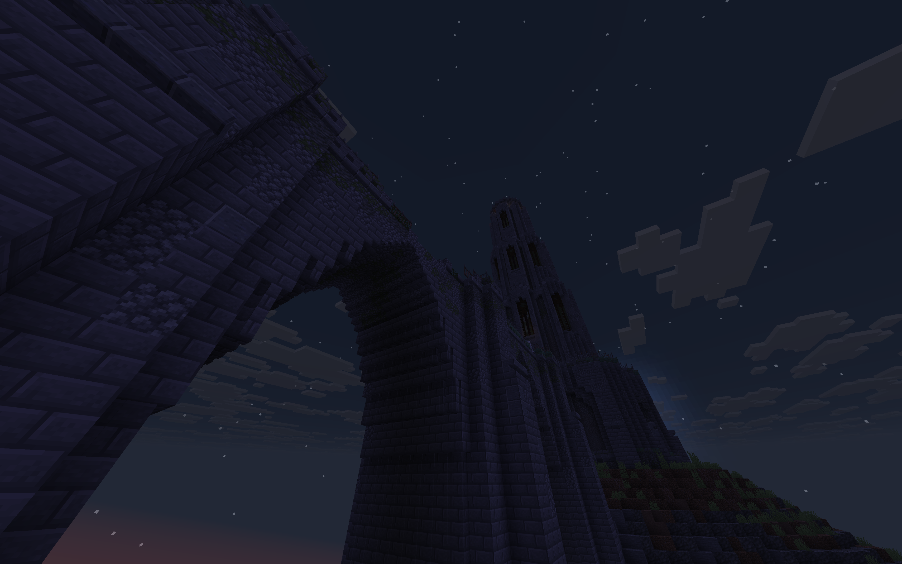
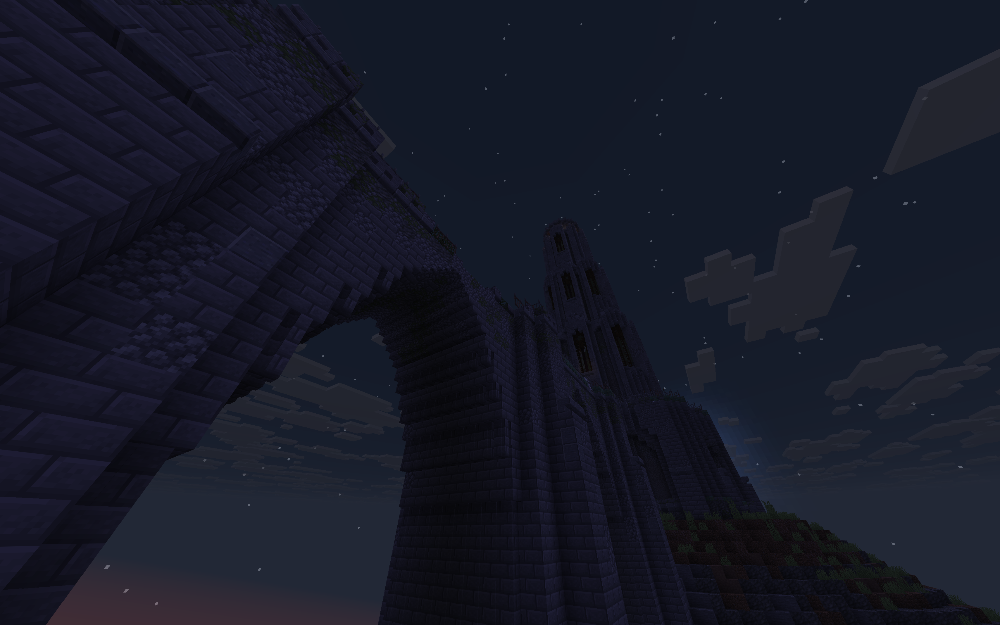

The world is awash in darkness. The Academics felt it: in the frayed edges of our minds; injecting into the veins of the world; in our hubris at attempting to reach beyond the cosmos... and we shuddered at its reverberations. But beneath it, deep in the debris of its ruinous wake, there might still be hope. A hope that we don't have to be prisoners to our minds forever; that the world can still be mended; that we can conquer our fears once and for all.
My Protégé. Carry with you the glimmer of hope that, someday, this shroud of darkness might be lifted. My Protégé, please do right where we went so wrong...
–
In Chapter I: Luminary, you play as the Protégé, arriving to the remnants of the Aterean Empire to observe a cosmic darkness that’s been summoned by the Academics and potentially help rid it from the land. In the hunt for 16 relics from the far-flung regions of the land to offer back to the Sanctum, your adventure will take you into crumbling catacombs, derelict towers, soaring palaces... and perhaps across space and time.
Featuring 4 unique biomes, custom items and unique monsters, Chapter I: Luminary presents a strong but humble first outing to the Anthology collection, weaving lore and storytelling into the gameplay of regular survival Minecraft.
–
 
